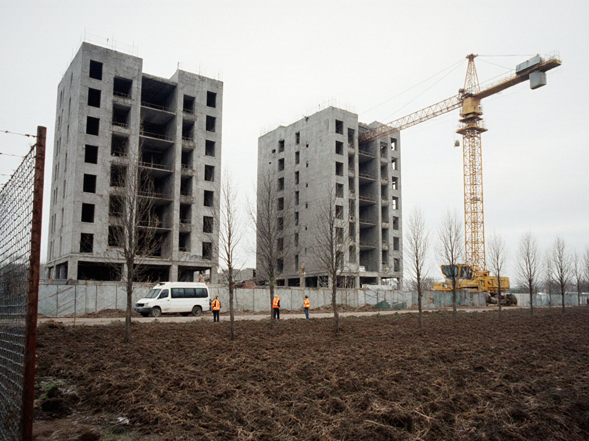

Город

ГородЧетыре новых жилых комплекса: 1 520 квартир для Нуржана
Нуржан строит больше всех: из девяти жилых комплексов ИСЭЗ четыре — у нас. Сдать дома обещают в 2027–2028 годах.

ГородНуржан строит больше всех: из девяти жилых комплексов ИСЭЗ четыре — у нас. Сдать дома обещают в 2027–2028 годах.